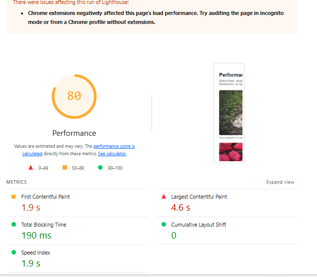
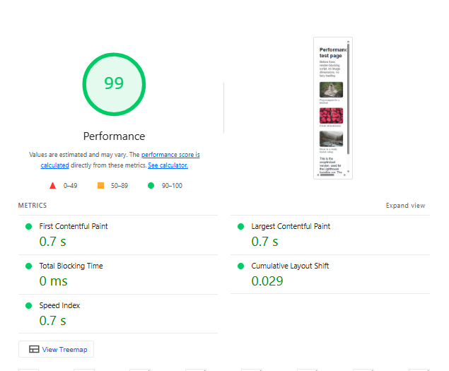
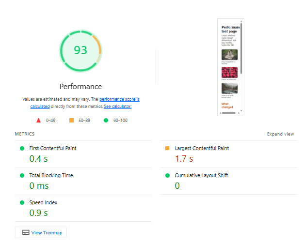
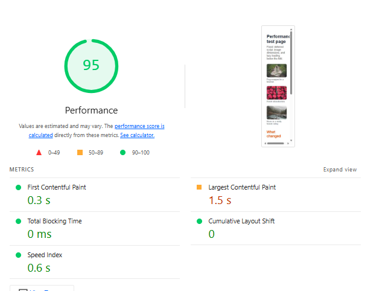

Audited page: exercise_01_lighthouse_fixes.html (Performance test page) and its unoptimized baseline exercise_01_lighthouse_fixes_before.html in week 9-part 2/ on sumansapkota9.github.io/Suman-Sapkota/ · Lighthouse Performance · Mobile and Desktop
| Metric | Mobile | Desktop | Target |
|---|---|---|---|
| Performance score | 80 | 99 | 90+ |
| First Contentful Paint | 1.9 s | 0.7 s | < 1.8 s |
| Largest Contentful Paint | 4.6 s | 0.7 s | < 2.5 s |
| Total Blocking Time | 190 ms | 0 ms | < 200 ms |
| Cumulative Layout Shift | 0 | 0.029 | < 0.1 |
| Speed Index | 1.9 s | 0.7 s | < 3.4 s |
| Data transferred | — | — | as small as possible |


These are the issues Lighthouse reported on the unoptimized baseline page:
defer and
blocks the page (est. savings 560 ms).Note: GitHub Pages sets a short cache lifetime (about 10 minutes) on every file — that one cannot be changed.
Three fixes were applied to the page. WebP conversion, fetchpriority and
an inline favicon were not needed for this page:
defer on the jQuery script — the HTML is no
longer blocked:
<script src="https://code.jquery.com/jquery-3.7.1.min.js" defer></script><img src="https://picsum.photos/id/1025/1200/800" alt="..." width="1200" height="800">
img { max-width: 100%; height: auto; }loading="lazy" on images 2 and 3 —
they wait until you scroll.| Metric | Mobile before | Mobile after | Desktop before | Desktop after |
|---|---|---|---|---|
| Score | 80 | 93 | 99 | 95 |
| LCP | 4.6 s | 1.7 s | 0.7 s | 1.5 s |
| FCP | 1.9 s | 0.4 s | 0.7 s | 0.3 s |
| Speed Index | 1.9 s | 0.9 s | 0.7 s | 0.6 s |
| Data transferred | — | — | — | — |


The fixes mattered most on mobile: the score went from 80 to 93, LCP from 4.6 s to 1.7 s, and Total Blocking Time from 190 ms to 0 ms — deferring the script unblocked the page, and lazy loading kept the below-fold images out of the first load. On desktop the page was already fast (99 before, 95 after): the small page loads in under a second either way, so the 99 → 95 difference is run-to-run variance in image load time, not a regression. CLS stayed under 0.1 in every run.